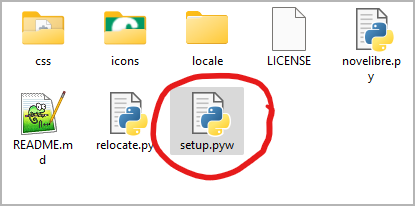
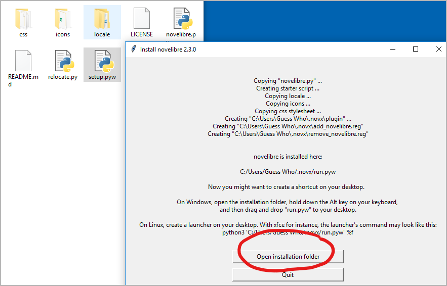
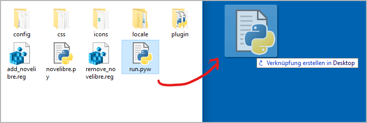
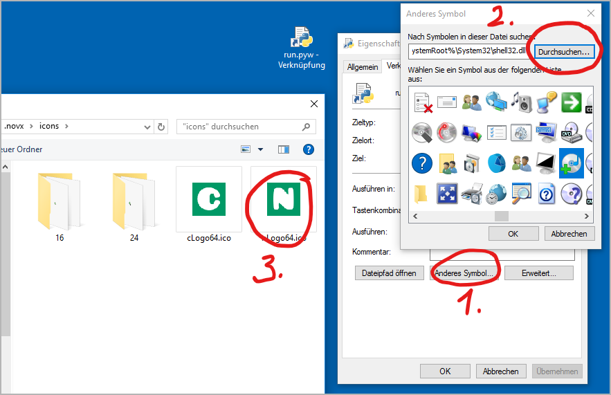
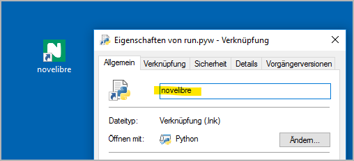
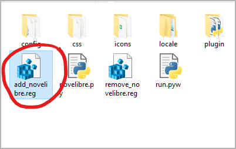
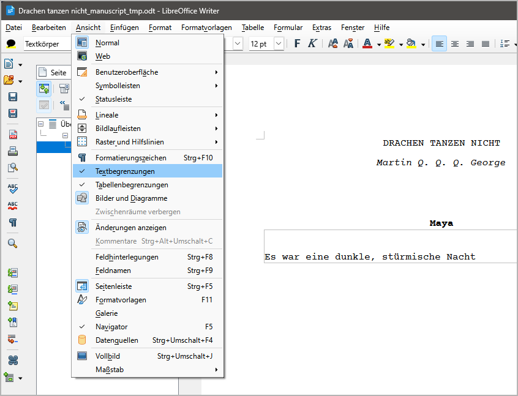
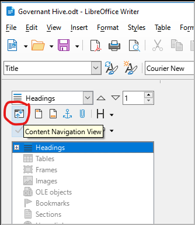
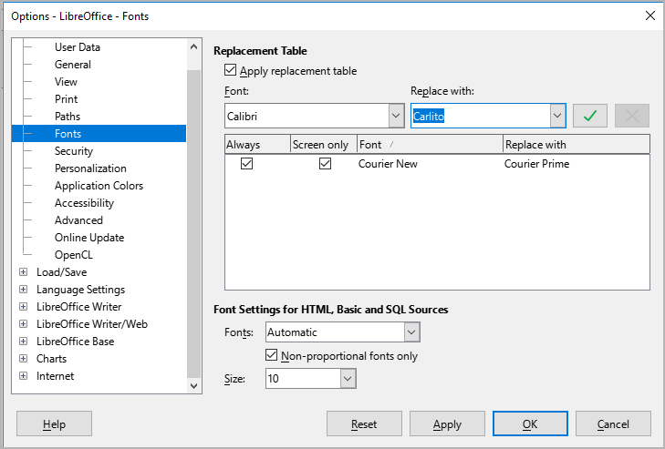

Vorbereitungen
novelibre einrichten
Wäre novelibre ein käufliches Anwendungsprogramm, würden alle im folgenden beschriebenen Schritte automatisch durch ein Installationsprogramm ausgeführt werden. Unter Windows wäre das beispielsweise eine .exe oder .msi-Datei, die mit besonderen Rechten ausgeführt werden müsste und vielleicht sogar ein teures Zertifikat benötigte, um zum Herunterladen und zur Installation zugelassen zu werden.
Dann gibt es noch das Problem, dass für jedes Betriebssystem ein eigenes Installationsprogramm erstellt und gepflegt werden müsste. Für Linux müssten Installationspakete oder Images bereitgestellt werden, wofür es eine Vielzahl unterschiedlicher Standards gibt.
Weil ich keine Softwarefirma betreibe, sondern nur ein Hobbyprogrammierer bin, der seine Zeit eigentlich lieber mit Romanschreiben verbrächte, habe ich beschlossen, einen anderen Weg zu gehen: Ich stelle ein Python-Einrichtungsskript bereit, das unter allen Betriebssystemen gleich funktioniert. Die allerletzten Schritte, die vom verwendeten Betriebssystem abhängen und eventuell auch besondere Benutzerrechte erfordern, müssen die unerschrockenen Benutzer selbst ausführen. Ich tue mein Bestes, um diese Schritte zu erleichtern, und gebe im weiteren eine detaillierte Anleitung für Windows. Viel Vergnügen!
Das Programm installieren
Entpacken Sie die heruntergeladene Zip-Datei.
Gehen Sie in den entpackten Ordner und starten Sie setup.pyw. Das installiert die Anwendung für den angemeldeten Benutzer.

novelibre auf den Desktop bringen
Anmerkung für Linux-Benutzer
In den folgenden Kapiteln wird das Vorgehen unter Windows beschrieben.
Wenn Sie Linux benutzen, erwarte ich, dass Sie einen Programmstarter auf Ihrem spezifischen Desktop einrichten können. Grob gesagt geht es darum, python3 mit ~/.novx/novelibre.py und einer optional angegebenen Datei als Parameter zu starten. Wahrscheinlich werden Sie die novelibre-Icons in ein spezielles Bilderverzeichnis kopieren müssen, wo der Programmstarter die Programmsysmbole sucht. Sie sollten außerdem novelibre als Standardanwendungsprogramm für Dateien mit der Endung .novx angeben, und diesen Dateien das novelibre-Symbol zuweisen. Auf dem XFCE-Desktop war das alles für mich nicht allzu schwierig. Schauen Sie im Zweifelsfall in Ihre Desktop-Dokumentation.
Es ist eine gute Idee, die novx-Erweiterung in den mimetypes als text/xml zu registrieren, dann kann Ihr Webbrowser sie mit Hilfe des novx.css-Stylesheets darstellen.
Öffnen Sie das Installationsverzeichnis.

Ziehen Sie run.pyw bei gedrückter
Alt-Taste auf den Desktop. Das erzeugt eine Progrmmverknüpfung, um novelibre vom Windows-Desktop aufzurufen. Nun können Sie .novx-Dateien auch auf diese Verknüpfung ziehen.
Wahlweise können Sie das „Python“-Programmsymbol durch das novelibre-Logo ersetzen, das Sie im Unterverzeichnis icons des Installationsordners finden.
Dazu klicken Sie mit der rechten maustaste auf die Programmverknüpfung und öffnen den Eigenschaften-Dialog. Wählen Sie den Verknüpfung-Karteireiter und klicken Sie auf Anderes Symbol… (1). Im Symbolauswahldialog klicken Sie auf Durchsuchen… (2). Das öffnet Einen Dateiauswahldialog. Gehen Sie auf This opens a file selection dialog. Move to
<home>\.novx\iconsund doppelklicken Sie das „N“-Logo (3).
Um die Programmverknüpfung in novelibre umzubenennen, klicken Sie mit der rechten Maustaste darauf und öffnen den Eigenschaften-Dialog. Im ersten Karteireiter ersetzen Sie „Verknüpfung mit run.pyw“ durch „novelibre“.

.novx-Dateien novelibre zuweisen
Wahlweise können Sie associate the .novx file extension with the novelibre application. Then the project files are displayed with the novelibre icon in the Explorer, and können Sie open them with novelibre by double-click. Further können Sie display .novx files with a web browser, using the novx.css style sheet.
Double-click on the add_novelibre.reg script. Windows will display a warning and ask you for confirmation. If in doubt, können Sie inspect the add_novelibre.reg file with a text editor or ask an expert you trust.

Hinweis
You can undo this by executing the remove_novelibre.reg script. This removes all the novelibre-specific entries from the Windows registry while keeping the application.
To uninstall the application and all its tools, plugins, and configuration data, just delete the
<home>\.novxfolder after executing the remove_novelibre.reg script.
Wichtig
Executing the program under Windows by double-clicking on the .novx file works under the hood by calling the currently installed version of the Python interpreter.
If you update Python at a later date, you must then re-run the setup.pyw script afterwards, and execute add_novelibre.reg again. Otherwise, Windows will not be able to find the new Python version and will fail when trying to open .novx files on double-clicking.
Please keep that in mind, even if it’s pretty unlikely that novelibre will need a Python update in the near future.
Das Programm oder ein plugin aktualisieren
Just execute the Steps 1 and 2 as described above. If there is any further action required, the setup script will give you a message.
Writer einrichten
I assume that novelibre users are already familiar with LibreOffice or ÖffnenOffice Writer. Therefore, I will only give a few brief tips that relate specifically to the interaction with novelibre.
Die Abschnitte im Manuskript sichtbar machen
An essential part of the workflow is writing with the Writer word processor. For this, novelibre creates editable Manuskript files in the Öffnen Dokument Text format that are meant to be temporary. These documents contain structural information that enables novelibre to recognize and correctly sort the sections when reading them back.
For the whole thing to work, it is extremely important that you only write within the section boundaries. To do this, you might want to make the text boundaries visible in the Writer settings.

LibreOffice Writer Screenshot: Make sure the Ansicht > Text Boundaries Menüeintrag is ticked. Writing outsides the visible text boundaries has no effect on your novelibre project.
Den Navigator andocken
To quickly find the chapters and sections of your novel in Writer, it
is best to keep the Navigator in sight. I prefer to dock it to the left
of the work area. To do this, first press F5 to open the Navigator.
By default, it appears as a pop-up window that can be placed anywhere
on the screen. To dock it, double-click in a free gray space while holding
down the Strg-Taste, as shown in the following image.

LibreOffice Writer Screenshot: The red „X“ indicates the position for double-clicking.
Tipp
The Navigator displays a confusing wealth of information. It is best to reduce this to the headings first. To do this, select „Headings“ at the top of the tree and then click on the „Content Navigation Ansicht“ icon. This works if a document containing headings is loaded.

LibreOffice Writer Screenshot: The red „O“ indicates the icon to click on.
Das Aussehen des Manuskripts anpassen
The Manuskript created by novelibre has a layout that is similar to the „Normseite“ which is widely used to provide an overview of the total number of pages of a work to be printed.
However, the set font „Courier New“ is only available for Windows, and it is not particularly attractive (I, for my part, have installed the free Courier Prime font on Windows and Linux, which gives me a pleasant typewriter feel).
In addition, hyphenation is turned off, and the page size is set to A4, which is not the worldwide standard.
That’s not for you? No problem. This is what the document templates in Writer are for. So if you don’t like the look of the generated Manuskript, simply apply a template that suits your needs and tastes. Perhaps you have to design your favorite template first, but your knowledge of this technique will pay off when it comes to designing print pages for self-publishing.
In order to minimize circumstances, I recommend my Style switcher extension, that allows you to customize your Manuskript with a single mouse click.
Bemerkung
Loading a template or changing the default font and page size has no impact on re-importing the document with novelibre.
Tipp
If you just want to change the font without applying templates, können Sie achieve this by having LibreOffice replace it automatically. For this, open the Optionen dialog and go to Fonts. Tick the Anwenden replacement table Auswahlfeld. Then enter the fonts of your choice.
novelibre uses „Courier Neu“ for text documents, and „Calibri“ for spreadsheets.

LibreOffice Optionen dialog Screenshot.